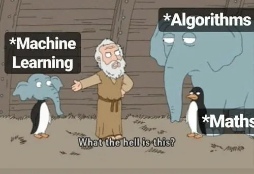

Key parts of teaching Machine Learning

Source: kdnuggets.com

Creating Machine Learning course from scratch


What is the main difficulty?

What do you need to succeed?
- Assemble a strong teaching team
with both academic and industry experts
- Thought out and resolved yourself assignments
- Trust and openness, chat with students
- Kaggle-style competitions
- Better to record and share video-lectures
- Interactive and emotional atmosphere,
questions for the audience
How do they teach Machine Learning at Neapolis University Pafos?
Part 1: Fundamentals of Machine Learning
- ML tasks types, examples, quality evaluation
- Linear models, gradient descent, decision trees
- Ensembles, random forest and gradient boosting
- Fully-connected neural networks and backpropagation
- Building GPT-2 from scratch
Part 2: Advanced Machine Learning
- Clustering and EM-algorithm
- LLM: tokenization, interpretations, embeddings
- Building AlphaZero from scratch
- Generative and discriminative models:
VAE, GANs, flows and diffusion
- RAGs and multi agents LLMs
Assignments
Setup example for online teaching in 2024
- Slides in JavaScript (reveal.js): for animations, video and interactivity
- Formulas and hand drew pictures in Microsoft Whiteboard on iPad
- PyCharm and Jupyter notebooks for coding demos
- OBS Studio for combining different scenes and streaming it
And what about teaching routine automatization?
-
AI can help you create a draft of one slide or
transform a short course description into a nice-looking syllabus
-
But the key content of the course is up to you
- It cannot create interesting, well-thought-out, and detailed homework assignments
- It cannot check the students' code and provide feedback
- Maybe the only way of using such technology in teaching
is to create a chatbot that will answer the most common questions from students
So it will not replace a real teacher,
but it can help to save some of your time
Motivation of teaching (and studying) ML
- AI now is third literacy, after classical literacy and programming
- Machine learning is becoming more and more common everywhere,
including in cutting-edge science and business
- Since 2024, there is even International olympiad in AI for school students:
IOAI
- And, of course, it is fun to teach and study ML!
🥳🎉📚 Thank you for attention and text me anything! 📚🎉🥳